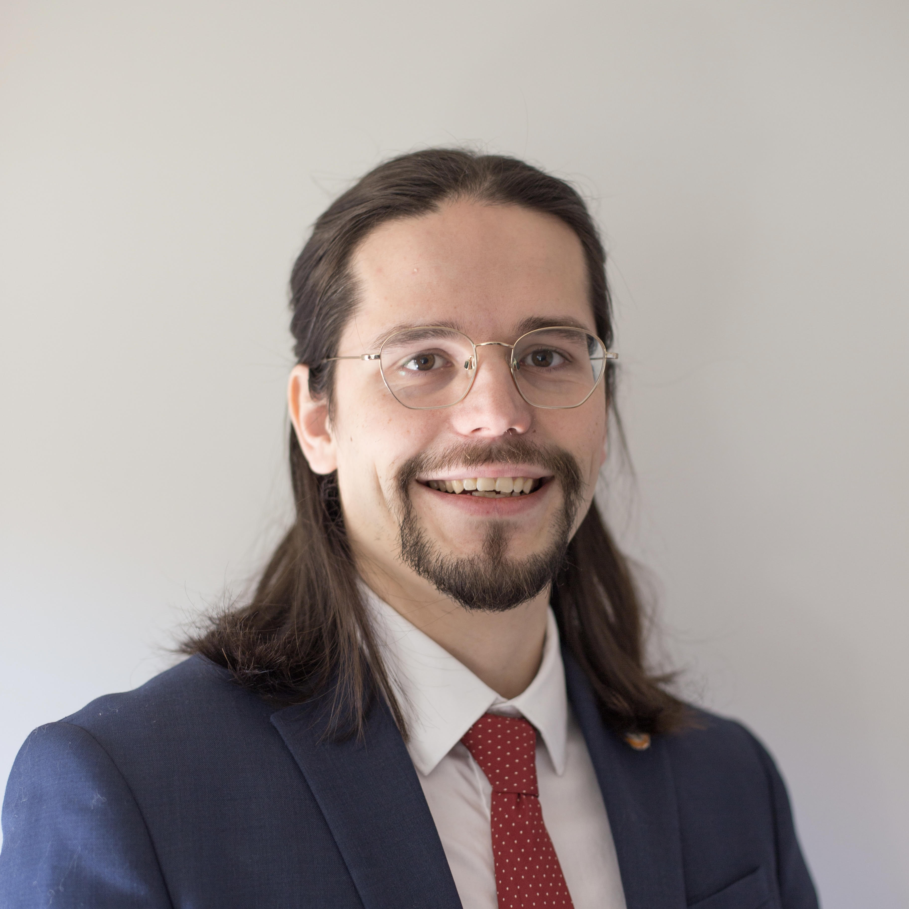

About Us
"Sycamore" is your trusted partner through every phase of the innovation journey. Our 'Full Cycle' solution development combines precision and rigor to make your strategic outcomes inevitable. With extensive experience in demanding Emerging Technology applications, we excel at navigating challenges and driving success, even in the most complex environments
Meet Our Founder
Kendall Prewitt, Founder & CEO
Contact: Kendall@Sycmr.com
Leveraging over a decade of experience in research and development within the fields of Robotics, Automation, and Manufacturing, Kendall has worked with industry leaders at Fortune 5 companies to push the boundaries of technological innovation. Throughout their career, they have played a pivotal role in developing cutting-edge solutions that have transformed manufacturing processes, optimized automation systems, and introduced advanced robotics to sectors in need of modernized solutions. In 2024, driven by a passion to bridge the gap between emerging technologies and underserved industries, Kendall founded SYCMR Technical. The firm was established with a clear mission: to deliver scalable, customized solutions that bring next-generation automation and robotics to industries traditionally overlooked by tech-driven innovations. With a deep understanding of the challenges and opportunities in high-tech development and a proven track record of successfully implementing complex systems, Kendall is committed to creating accessible, cost-effective, and impactful solutions that not only solve problems but also enable businesses to scale and grow. The vision of SYCMR Technical is rooted in creating value through technological advances that improve efficiency, reduce costs, and drive sustainability in manufacturing and automation across diverse sectors